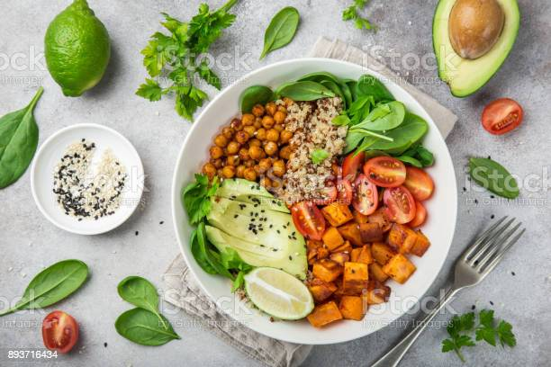

Benifits of Vegetable salad
Aside frrom their natural good taste na d crunchy texture alongside wonderful color and fragrances eating a large serving of fresh, raw vegetables each days can have significant health benefits
Steps To Make Vegetable Salad
- Take a large and clear glass bowl.
- Try adding balanced,lightly steamed or roasted veggies like brocoli,frenchbeans,corn,cauliflower,babycorn.
- Add lentis,beans or chikpeas or bean spourts for more protiens.
-
- Grate some of the vegetables for a different texture.
- Add marinated veggies like artichoke hearts fo tang, other veggies like radish for somme pregnancy.
- Swap in your own favorite combination of dried fruits, nuts and seeds
- Use fresh corianders or chives insted of parsely